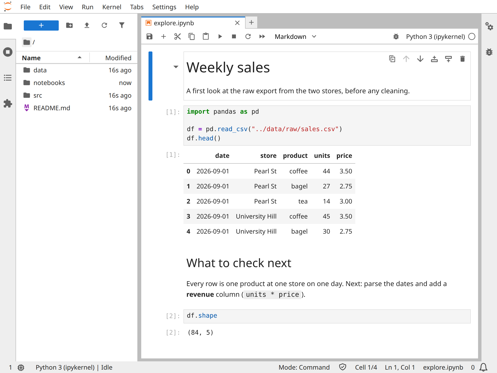
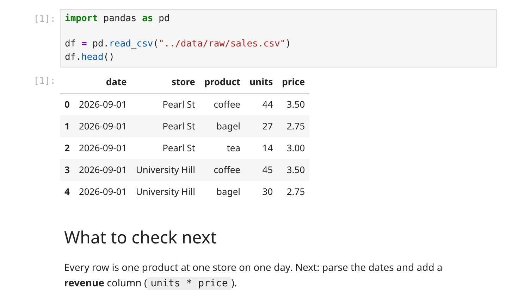

16 Jupyter
Prerequisites (read first if unfamiliar): Chapter 14, Chapter 15.
See also: Chapter 17, Chapter 7, Chapter 28.
Purpose
It’s the night before the assignment is due, and your notebook is finished. Every cell has output, the charts look right, and the conclusion is written. To be safe, you click Restart Kernel and Run All Cells, and the fourth cell stops with an error you’ve never seen. Nothing about the code changed. What changed is that, for the first time in days, the notebook ran from the top in the order it’s written on the page, instead of the order you happened to click through it.
If that has happened to you, you’re in very good company. Jupyter notebooks are wonderful for exploring data, because they put code, results, and your own explanation side by side, and you can try something, look, and try again. That same flexibility is where the trouble comes from: a notebook remembers everything you’ve run, in whatever order you ran it, so it can look finished while depending on steps nobody can see. Add a server started from the wrong folder, a kernel pointing at the wrong Python, and a file that grows every time you print a table, and you have most of the frustration students feel about Jupyter.
This chapter is about the habits that prevent those problems: launching Jupyter so it finds your files, understanding what the kernel remembers, using cells, magics, and shell commands well, writing a notebook someone else can rerun, finding out what makes one slow, and working on hosted platforms like Google Colab. It doesn’t teach Python or pandas (see Chapter 22), and it leaves the full story of scripts to Chapter 17, though it does explain when to move work from one to the other.
Why read this chapter
- You opened JupyterLab and saw your home folder or
Downloadsinstead of your project, and you’re not sure where your files went. pd.read_csv("data/raw/sales.csv")saysFileNotFoundErrorwhile the file sits right there in the file browser.- You ran
pip install pandas, and the notebook still saysModuleNotFoundError: No module named 'pandas'. - Your notebook worked all evening, then Restart Kernel and Run All Cells stopped it with an error in the fourth cell.
- You’ve seen
%timeit,!ls, and%%bashin other people’s notebooks and want to know what the percent signs and exclamation marks do. - Your notebook file has grown to tens of megabytes, and nobody (including Git) can make sense of what changed in it.
- A cell has been running for ten minutes, and you can’t tell whether it’s working, stuck, or just slow, or which part of your code is to blame.
- Your course hands out Google Colab links, and a file you saved there yesterday is gone today.
Running theme: notebooks are documents and programs
A good notebook reads like a report and runs like a program, from top to bottom, on someone else’s computer; most of this chapter is about keeping both of those true at once.
16.1 What Jupyter is doing
Most people learn Jupyter by clicking around, and that works fine until something breaks. Then it helps a lot to know what’s actually running, because every confusing Jupyter problem is really a question about one of three pieces.
First, the two names. JupyterLab is the environment most courses use now: a file browser down the left, notebooks open as tabs, and terminals and text files alongside them. Jupyter Notebook is the original, simpler interface, with one notebook per browser tab and a separate page listing your files; its current version, Notebook 7, borrows many of JupyterLab’s features. Both are the same idea, a notebook interface, running on the same machinery, so everything below applies to either.
That machinery has three parts. The server is the program you start when you type jupyter lab in a terminal. It keeps running in that terminal window, listening at an address on your own computer (usually http://localhost:8888, where localhost means “this machine”). The browser tab is only a window onto the server: it’s where you edit cells and see results, but it doesn’t run anything itself. And the kernel is a separate process that actually runs your code. For a Python notebook, it’s a Python interpreter; kernels exist for R, Julia, and dozens of other languages too. When you press Shift+Enter, the code travels down the chain and the result comes back up:
You type in a cell → browser → Jupyter server → kernel → result back up the chainThe kernel is the piece that surprises people, because it remembers everything. It works like the Python prompt you get by typing python in a terminal (a read–eval–print loop, or REPL): when a cell runs df = pd.read_csv("data.csv"), df lives in the kernel’s memory until the kernel restarts, whether or not that cell is still on the page. Run cells out of order, redefine a variable, or delete a cell after running it, and what’s on screen no longer matches what’s in memory. People call this hidden state, and it’s why “it works in my notebook” so often means “it works with whatever my kernel happens to remember right now.” The only way to be sure a notebook is correct is to restart the kernel and run every cell from the top, a habit that comes up again and again below.
16.2 Launching Jupyter the right way
The most common Jupyter complaint, by a long way, is some version of “my files aren’t there.” It nearly always comes down to two facts nobody mentions when you install Jupyter. The folder you start Jupyter from becomes the top of its file browser: you can open anything inside that folder and nothing above it. And each notebook’s code runs in the folder where the notebook file is saved (its working directory), which is where relative paths like data/raw/sales.csv are looked up.
The first fact tells you how to start. Open a terminal, go to your project’s folder, activate its environment (see Chapter 15), and only then start the server:
cd ~/Courses/INFO-3010/Project # 1. go to the project root
source .venv/bin/activate # 2. activate the project's environment
jupyter lab # 3. start the serverThe cd decides what the file browser shows. Activating the environment means Jupyter runs with your project’s Python and packages rather than whatever Python happens to be first on your system. And jupyter lab (or jupyter notebook, for the classic interface) starts the server and opens a browser tab. The file browser should now show your project, as in Figure 16.1: data/, notebooks/, src/, and the README. If it shows something else, stop and start again from the right folder. JupyterLab’s guide to starting JupyterLab covers the options.

jupyter lab, in September 2026. The file browser on the left shows the project root, because that is where the server was started; the notebook opens as a tab in the centre; and the kernel indicator at the top right names the kernel the notebook runs on, Python 3 (ipykernel).
Now the second fact, which catches almost everyone. Starting from the project root does not make the project root your notebook’s working directory: JupyterLab starts each notebook’s kernel in the folder where the notebook is saved. The notebook in Figure 16.1 lives in notebooks/, so its code runs in notebooks/, and that’s why it reads ../data/raw/sales.csv (.. means “the folder above”) rather than data/raw/sales.csv. You can see it for yourself with os.getcwd(), which prints where the kernel is working:
import os
print(os.getcwd())/Users/you/Courses/INFO-3010/Project/notebooksRun the same line in a terminal at the project root and you’ll get a different answer. That’s the first thing to check whenever a path misbehaves. The same goes for imports: from src.cleaning import clean_sales fails in a notebook saved in notebooks/, because Python looks for src in the notebook’s folder. Paths starting with ../ are fine for quick work, but they break when the notebook moves, and they don’t match the paths a script uses. Chapter 17 shows the dependable fix for both: make your code an installable package (python -m pip install -e .), and build every path from one project-root anchor, so from sales.paths import DATA_RAW works the same in every notebook and script.
When your files aren’t there
When JupyterLab opens on the wrong files, the server is almost always running somewhere other than you think. There are three usual ways to get there: you started it from your home folder or Downloads instead of the project; you have two servers running, and the browser tab you’re looking at belongs to an old one; or you started it with the wrong environment active, so the files look right but the packages don’t.
Stop the server. Go back to the terminal window where it’s running and press Ctrl+C twice (the first asks whether you’re sure; the second skips the question). Close the browser tab too, so you don’t wander back to it.
Go to the right folder and check. cd into the project and run pwd to confirm where you are before going any further.
Activate the environment and start again with jupyter lab. If you can’t start from the folder itself, jupyter lab --notebook-dir=path/to/project sets the file browser’s top folder explicitly.
If the wrong files still appear, look for a server you forgot about. jupyter server list shows every server running on your computer and the folder each one is serving:
$ jupyter server list
Currently running servers:
http://localhost:8888/?token=... :: /Users/you/DownloadsStop the stray one from its own terminal window, or close that window. The file browser section of JupyterLab’s guide explains what it can and can’t reach.
16.3 Cells and running them
Cell types
Every cell has a type, and there are only three. A code cell holds Python (or whatever language the kernel speaks) and sends it to the kernel when you run it. Anything the code prints appears below the cell, and so does the value of the cell’s last line, which is why a cell ending in df.head() shows a table without any print. A Markdown cell holds prose written in Markdown: running it turns # Heading into a heading, *this* into italics, and $x^2$ into typeset math. Markdown cells are what turn a notebook into a document, and Figure 16.2 shows one of each. A raw cell is passed through untouched, for tools that convert notebooks into other formats; you’ll rarely need one, so leave them alone unless a tool asks for one.

df.head(), and its output, the first five rows of the table, appears beneath it with the same [1] label. The Markdown cell below has been run too, so it shows a formatted heading and paragraph instead of its source.
[code cell] → sent to kernel → produces output below the cell
[markdown cell] → rendered as HTML → produces formatted text below
[raw cell] → passed through untouched (rarely needed)To change a cell’s type, use the dropdown in the notebook’s toolbar, or press Esc to leave the cell’s text (Jupyter calls this command mode) and then Y for code, M for Markdown, or R for raw. JupyterLab’s notebook guide walks through the rest of the interface.
Running cells, and stopping them
There are three ways to run a cell, and each suits a different moment. Shift + Enter runs the cell and moves to the next one, which is what you want when you’re working down the notebook. Ctrl + Enter (Cmd + Enter on a Mac) runs it and stays put, for when you’re tweaking one cell over and over. Alt + Enter runs it and adds a fresh empty cell below. The Run menu can also run everything above the current cell, or the current cell and everything below it.
Shift + Enter → run and advance (default)
Ctrl + Enter → run and stay (iteration)
Alt + Enter → run and insert new cell below
Menu: Run → Run All Cells (from the top)
Menu: Run → Run All Above Selected Cell (up to the current cell)
Menu: Kernel → Restart Kernel and Run All Cells (the reproducibility check)When a cell runs too long, there are two levels of stopping it, and it’s worth knowing the difference before you need it. Interrupt (the square stop button, or I, I in command mode) cancels the cell that’s running and keeps the kernel, so every variable you built up is still there. Restart (the circular arrow, or 0, 0 in command mode) throws the kernel away and starts a new one, empty. Always interrupt first; restart only if interrupting does nothing, and then run the cells you need again from the top.
The small number in square brackets beside each code cell, like [7], is the most useful diagnostic on the screen. It’s the execution count: it goes up by one every time any cell runs, so it records the order things actually happened in. Down a notebook that was run from the top, the numbers climb in order, [1] [2] [3] [4], and the outputs are what the code produces on a fresh run. If they read [3] [1] [7] [2], the cells were run out of order, and the outputs may be a collage of states that never existed at the same moment. Before you trust a notebook, yours or anyone else’s, glance down the left edge and check that the numbers climb. (The same number shows up in tracebacks as In[7], as Chapter 7 explains.)
Organizing cells
A notebook is a document, so its order should tell the story you’re telling. When a side experiment turns out to matter, move it into the main line; when a helper calculation clutters the flow, move it up or out. Drag cells in JupyterLab, or select one and press Ctrl + Shift + Up or Down to move it. Every command, with its keyboard shortcut if it has one, is also in the command palette.
As a notebook grows, Markdown headings do more for it than anything else. A Markdown cell reading ## Cleaning decisions becomes a heading in the notebook and an entry in JupyterLab’s table of contents panel, so even five headings turn a hundred-cell scroll into something you can jump around in, and a reader can see its structure at a glance.
One ordering rule is worth treating as fixed: imports and setup go at the top. Start every notebook with its imports, a cell of paths and settings, and a quick check that the environment is right (the “smoke test” in Chapter 17), and put nothing before them. An import buried halfway down means anyone who runs from the top hits a NameError before reaching it.
16.4 Keeping notebooks small
A notebook file is JSON, a text format, and every output is saved inside it along with the code. Print ten thousand rows and the text of ten thousand rows goes into the file; draw a plot and the image is stored in it as a long string of encoded text. Run that plotting cell twenty times while you tweak colors, keep the outputs of an old experiment, and a notebook can reach tens of megabytes. Then it’s slow to open, painful to scroll, and impossible to review: a Git diff of a big notebook is mostly pages of encoded images.
Summarize instead of dumping. Don’t end a cell with df to see the whole table; end it with something that shows just enough:
# Avoid: dumps the entire dataset into the notebook output
df
# Prefer: just enough to see what's there
df.head()
df.shape # (rows, cols) — almost always what you want
df.describe() # summary statisticsThe same goes for everything else: print len(files) and files[:5], not a list of every file in a folder.
Save what matters to files. A figure you’ll use in a report belongs in figures/, written with savefig, and a cleaned dataset belongs in data/processed/. The notebook’s job is to make those files, not to be them:
# Avoid: 4 MB PNG stored inside the notebook file
import matplotlib.pyplot as plt
plt.scatter(x, y)
plt.show()
# Prefer: saved to a file, referenced from markdown
fig, ax = plt.subplots()
ax.scatter(x, y)
fig.savefig("../figures/scatter-by-region.png", dpi=150, bbox_inches="tight")
plt.close(fig) # prevents the figure from also appearing in the cell outputA Markdown cell can then show the saved file (the path is relative to the notebook, so from notebooks/ it starts with ../):
Clear outputs and rerun before you commit or share. Edit → Clear Outputs of All Cells empties every output, and Kernel → Restart Kernel and Run All Cells then fills them in again from a clean run. The file you commit is smaller, holds one copy of each plot instead of twenty, and shows exactly what the current code produces. From a terminal, jupyter nbconvert --clear-output --inplace notebook.ipynb does the clearing, and the nbstripout tool in Further reading can do it automatically every time you commit.
16.5 Shell commands and magics
Sooner or later you’ll want to do a bit of housekeeping without leaving the notebook: check that data/raw/sales.csv actually arrived before reading it, see what an earlier step wrote to data/processed/, download a file, or run a command-line tool like git. You could switch to a terminal, but running the check in the notebook keeps it next to the code that depends on it. Jupyter gives you two ways, and they look different on purpose. (Shell commands start in the notebook’s folder too, so the examples below assume a notebook saved at the project root; from notebooks/, the paths start with ../.)
Bangs and magics
A line that starts with an exclamation mark, a bang, is handed to your computer’s shell, and whatever it prints appears below the cell. You can mix bang lines with Python in the same cell:
# A mix of Python and shell in one cell
import pandas as pd
!ls -lh data/raw/ # shell: list the raw data folder
df = pd.read_csv("data/raw/sales.csv") # Python: load it
!wc -l data/raw/sales.csv # shell: how many lines did we just read?Magics start with % (for one line) or %% (for a whole cell), and they’re commands that IPython, the Python kernel, understands itself rather than passing to the shell. Line magics each do one job, such as %cd to change the working directory or %env to read an environment variable. Cell magics change what the whole cell does: %%time times it, and %%bash runs the whole cell as a Bash script, which is tidier than a ! on every line when you need a loop:
%cd ~/Courses/INFO-3010/Project # change the kernel's working directory
%pwd # print it
%env API_URL # show the value of an env var%%bash
# Whole cell runs as a bash script; no ! prefixes needed
for f in data/raw/*.csv; do
echo "$f: $(wc -l < "$f") lines"
donedata/raw/sales.csv: 1201 lines
data/raw/survey.csv: 3 linesThe difference matters when you share notebooks across operating systems. A bang line runs in whatever shell your computer has, so !ls works on a Mac or Linux and fails in Windows’ Command Prompt, and %%bash needs Bash installed. Magics that IPython implements itself, such as %cd and %pwd, behave the same everywhere, and %ls quietly runs dir on Windows. IPython’s guide to system shell access has the details.
Magics worth knowing
A handful of magics cover nearly everything you’ll need, and it’s worth knowing them by name so you recognize them in other people’s notebooks. The full list is in IPython’s built-in magics reference, or type %lsmagic in a cell.
%pwdprints the kernel’s working directory: the first thing to run when you suspect a path problem.%cd <path>changes it. Use it sparingly: a notebook that moves itself around behaves differently depending on which cells you’ve run, and running%cd ..twice lands you one folder too high.%lslists the current folder.%env VARprints an environment variable, and%env VAR=valuesets one for this kernel.%pip install <package>installs a package into the environment the kernel is running in, which is not always the one your terminal is using (see “Wrong kernel” below).%time statementruns one line and prints how long it took;%%timeat the top of a cell times the whole cell.%timeitand%%timeitrun a small piece of code many times and report the average, for comparing two ways of doing something (see “Finding what’s slow” below).%load_ext autoreloadthen%autoreload 2makes the kernel reload your own modules insrc/when you edit them, so you don’t have to restart (autoreload docs; Chapter 17 shows the workflow).%matplotlib inlinedraws matplotlib plots inside the notebook. Current Jupyter does this by default, but you’ll still see the line at the top of many notebooks.
Put together, a typical first cell looks like this:
# A typical top-of-notebook setup using several magics
%load_ext autoreload
%autoreload 2
%matplotlib inline
import pandas as pd
from sales.cleaning import clean_sales # your package, installed with python -m pip install -e .
from sales.paths import DATA_RAW
%time df = pd.read_csv(DATA_RAW / "sales.csv")CPU times: user 3.55 ms, sys: 35.8 ms, total: 39.3 ms
Wall time: 39.6 ms(The sales package and its paths module are the layout Chapter 17 builds.)
Using the shell safely
Shell commands in a notebook are easier to misuse than the same commands in a terminal. A notebook hides the context a terminal gives you (the prompt, the folder you’re in, the history scrolling above), and Run All will happily rerun a command you meant to run once. A few habits keep this safe.
Look before you delete. !rm data/processed/*.csv in a cell is exactly as permanent as it is in a terminal, and easier to run by accident. Before any rm, mv, or > redirect, run !ls with the same path or glob pattern to see exactly which files it will touch.
Never use sudo in a notebook. If you find yourself wanting !sudo apt install something, switch to a terminal, install it there, and come back. A notebook is for analysis, not for changing your system.
Never type a secret into a cell. The notebook file saves every cell’s contents, so an API token in a cell goes wherever the file goes: into Git, onto GitHub, into the email you attach it to. Keep secrets in environment variables or a .env file that Git ignores (see Chapter 34), and refer to them by name:
# BAD: token is now permanently recorded in the notebook file
!curl -H "Authorization: Bearer sk-abcdef1234" https://api.example.com/data
# BETTER: token stays in the environment, never written to the notebook
!curl -H "Authorization: Bearer $API_TOKEN" https://api.example.com/dataOne surprise in that second line: in a bang command, IPython replaces $NAME with a Python variable of that name if one exists, and only otherwise leaves it for the shell. If you’ve also written API_TOKEN = "..." in a cell, that value is what gets sent.
Say what the command does. A Markdown cell above it reading “This downloads the October data into data/raw/” saves the next reader (often you) from puzzling over a curl line. And once you’ve written a command down, you have a record of it: that’s the real advantage over clicking through the same steps in a file manager every semester.
16.6 Writing a notebook that survives
Give it a predictable structure
A reader opening your notebook for the first time, including you in three weeks, should be able to tell from the first screen what it’s for, what it needs, and what it produces. The easiest way to guarantee that is to use the same skeleton every time:
# <Title>
<One-paragraph purpose: what this notebook does and why it exists.>
## Setup
- Imports
- Paths and parameters
- Smoke test (cwd, python, key files)
## Data acquisition and provenance
- Where the data came from (URL, date, source)
- How it was downloaded
## Cleaning and validation
- Filters applied (and why)
- Validation checks (row counts, required columns, no nulls)
## Analysis
- One subsection per question
## Results and interpretation
- Plots, summary tables
- One paragraph interpreting each
## Next steps / limitations
- What you did not do
- Caveats the reader should knowEach section earns its place. The purpose paragraph is often the difference between a notebook a collaborator understands and one they have to ask you about. Setup is where any failure to run on someone else’s computer will show up, and it shows up first, clearly, because this section runs first. Provenance answers “where did this data come from?”, a question with no good answer later if you didn’t write it down at the time. Validation catches the “wait, that shouldn’t be zero” moments while you can still fix them. Results is the story; without it, the notebook is a pile of calculations. Use the skeleton even for small notebooks: some sections will be two lines long, and the headings still orient the reader.
Write the prose
The feature that sets a notebook apart from a script is prose woven between the code, an idea much older than Jupyter called literate programming. A notebook only earns that feature if you write the prose: fifty code cells and no Markdown is a script with a confusing interface.
Use headings to break the notebook into sections, and before any cell that makes a decision (a filter, a join, a cutoff, a model choice), write a short paragraph saying why you did it this way and not another. Six months from now you won’t remember, and a fresh reader will want to know:
## Filtering out cancelled orders
The raw data contains every order the system has seen, including
cancellations (which appear as a separate row with `status == "cancelled"`).
For revenue analysis we want to exclude cancelled orders, because they
were refunded and no money actually changed hands. We keep them in
`data/raw/` for completeness but drop them here.
```python
active = df[df["status"] != "cancelled"]
```
Dropping cancellations removes about 4% of rows (12,104 of 302,811).Caption your plots and tables, too: a sentence before a figure saying what it shows, and ideally one after saying what to notice. A plot without a caption is decoration; with one, it’s evidence. The test of whether there’s enough prose is to imagine handing the notebook to someone who knows the subject but has never seen your data. If they could follow the argument without you sitting beside them, it’s enough.
Keep it reproducible
A reproducible notebook gives the same results every time it runs from a fresh kernel. That sounds obvious, and it’s surprisingly easy to drift away from, because the interface lets you run cells in any order, delete cells whose results you still depend on, and define things that never make it into any cell. A few habits keep the notebook honest.
Run top to bottom, and prove it often. Never run a cell that depends on something further down, and every time you finish a real piece of work, not just before you hand it in, run Kernel → Restart Kernel and Run All Cells. If the notebook works interactively but fails after a restart, something it depends on exists only in the kernel’s memory, and it’s far better to find out now than on a grader’s computer (“Out-of-order execution” below shows what this looks like).
Define everything in a cell that’s still there. A variable you typed into a cell and then deleted, like a quick df2 = df.copy(), lives on in this session and vanishes in the next. Every name the notebook uses should come from a cell that’s currently in it.
Write a function instead of copying code. When the same block appears in two cells, the two copies will drift apart. Make it a function, in a cell near the top or in src/, and call it in both places.
Keep paths inside the project. A notebook that reads /Users/alex/Downloads/survey.csv runs only on Alex’s laptop; one that reads ../data/raw/survey.csv, or builds the path from a project-root anchor as Chapter 17 shows, runs anywhere the project folder does. Chapter 10 explains relative and absolute paths in detail.
Keep files in labeled folders: data/raw/ for inputs, data/processed/ for derived tables, figures/ for plots, reports/ for finished work. A notebook that writes everything to its own folder is hard to clean up and hard to check.
Record the environment
The code is only half of what determines a notebook’s results; the versions of Python and every package are the other half. pandas 3, for example, reads text columns as a new str type where pandas 2 used object, so the same notebook can print different results, or fail, depending on which version is installed. If you don’t record the versions, reproducing your results six months from now turns into archaeology. The minimum is to print the ones that matter near the top of the notebook:
import sys, platform
import pandas as pd, numpy as np
print("python: ", sys.version.split()[0])
print("platform:", platform.platform())
print("pandas: ", pd.__version__)
print("numpy: ", np.__version__)python: 3.12.3
platform: Linux-6.18.44-fc-v37-x86_64-with-glibc2.39
pandas: 3.0.6
numpy: 2.5.3The fuller habit is an environment file in the project that pins every dependency (see Chapter 15 and Chapter 14): environment.yml for conda, or requirements.txt or pyproject.toml for pip. Commit it alongside the notebook, and add one line to the README saying how to recreate the environment from it. With the file and the code, anyone, including you on a new laptop, can get back to the same setup.
16.7 Notebook pitfalls and how to prevent them
Out-of-order execution
This is the classic notebook bug: everything works in your session and nothing works anywhere else. You ran the cells in whatever order you needed while exploring, got the answer, and closed the laptop. Next week, a run from the top fails, because one cell only ever worked thanks to a cell further down that you happened to have run first. It’s by far the most common reason a notebook “works on my machine” and nowhere else.
The execution counts give it away. Compare a healthy notebook with one that has a hidden-state bug:
# Cell execution counts in a healthy notebook
[1] import pandas as pd
[2] df = pd.read_csv("data/raw/sales.csv")
[3] df["date"] = pd.to_datetime(df["date"])
[4] df["month"] = df["date"].dt.month
[5] df.groupby("month")["units"].sum()
# Cell execution counts in a notebook with a hidden-state bug
[1] import pandas as pd
[2] df = pd.read_csv("data/raw/sales.csv")
[5] df["month"] = df["date"].dt.month # needed the cell below it first
[4] df["date"] = pd.to_datetime(df["date"])
[6] df.groupby("month")["units"].sum()In the second notebook, the cell that converts dates sits below the cell that uses them, and it worked only because the dates cell ran first (count [4] before [5]). The missing [3] is a cell that ran and was later deleted, and whatever it did is still in memory. Restart and run all, and the third cell stops with AttributeError: Can only use .dt accessor with datetimelike values, because on a fresh run the dates are still text. The cure is the ritual from above: Restart Kernel and Run All Cells after every chunk of work, then fix the order while you still remember why it matters.
Wrong kernel, wrong environment
This one has a different symptom. You pip install pandas in a terminal, go back to the notebook, and import pandas still says ModuleNotFoundError. Or the import works but a function is missing, or a warning appears that never did before. It’s all the same problem: the kernel is running a different Python from the one you installed into. Jupyter can have many Python environments registered as kernels, and it’s easy to pick the wrong one, especially after creating a new environment or opening an old notebook.
Check, don’t guess. The kernel’s name is at the top right of the notebook (Python 3 (ipykernel) in Figure 16.1), and one line in a cell tells you which Python it really is:
import sys
print(sys.executable)sys.executable should point into your project’s .venv/. If it doesn’t, click the kernel name (or use Kernel → Change Kernel) and pick the right one. If your environment isn’t in the list at all, register it once, with the environment activated in a terminal:
# Register the project's venv as a named kernel
$ source .venv/bin/activate
(.venv) $ python -m pip install ipykernel
(.venv) $ python -m ipykernel install --user \
--name=info3010 --display-name="INFO 3010 (venv)"The python -m pip in the middle is on purpose. It installs into whichever Python python is, so with the venv active, ipykernel can’t land anywhere else. Plain pip is a separate command that can belong to a different Python, and that mismatch is how this whole problem starts.
Reload JupyterLab and “INFO 3010 (venv)” appears in the kernel list, which is much easier to pick out than a row of identical “Python 3 (ipykernel)” entries. jupyter kernelspec list shows every kernel you’ve registered, and IPython’s kernel installation guide covers the details. And if you just need one package in the kernel you’re already using, %pip install pandas in a cell installs it into exactly that environment.
File not found
The third pitfall is the FileNotFoundError that makes no sense, because the file is right there. You can see data/raw/sales.csv in the file browser, and still pd.read_csv("data/raw/sales.csv") fails:
FileNotFoundError: [Errno 2] No such file or directory: 'data/raw/sales.csv'The file browser shows paths from where you started Jupyter; your code looks for them from where the notebook is saved. A notebook in notebooks/ is looking for notebooks/data/raw/sales.csv, which doesn’t exist. Three lines tell you exactly where it looked, using pathlib:
import os
from pathlib import Path
print("cwd: ", os.getcwd())
print("exists: ", Path("data/raw/sales.csv").exists())
print("absolute:", Path("data/raw/sales.csv").resolve())cwd: /Users/you/Courses/INFO-3010/Project/notebooks
exists: False
absolute: /Users/you/Courses/INFO-3010/Project/notebooks/data/raw/sales.csvOnce you see the absolute path, the fix is clear: write the path from the notebook’s folder (../data/raw/sales.csv), or, better for a project you’ll keep, build it from a project-root anchor such as DATA_RAW / "sales.csv" (see Chapter 17). The same error appears after you move a notebook into another folder, since its working directory moves with it. Chapter 10 covers relative paths in general.
Long-running or stuck cells
Sooner or later a cell takes longer than you expected: a data load that should take ten seconds is still going after two minutes. The first question is whether it’s slow (doing the work, just taking a while) or stuck (waiting on something that will never finish, like a network call that hung or a loop that never ends). Interrupt it first; the kernel keeps your variables. Interrupting can take a moment if the kernel is in the middle of a long operation, since it responds between steps. If interrupting does nothing, restart the kernel, which loses everything in memory.
Better still, make a long cell show its progress. For a loop, tqdm draws a progress bar, so you can see whether it’s moving and how long is left:
from tqdm import tqdm
for row in tqdm(df.itertuples(), total=len(df)):
process(row)For a single slow step, put %%time at the top of the cell:
%%time
result = expensive_function(df)With a progress bar or a timer, “is it stuck?” becomes “how fast is it going?”, which is a much more useful question. And genuinely expensive work doesn’t belong in a notebook at all. A model that takes four hours to train should be a script that saves the model to disk, with a notebook that loads the result and looks at it; that way one wrong keystroke doesn’t cost you the whole run.
16.8 Finding what’s slow: measure, then profile
A slow notebook tempts you to start rewriting whatever looks inefficient. Resist it: the slow part is rarely where you’d guess. The three-step pipeline below takes a minute on 200,000 rows of sales data, and the step that looks most suspicious isn’t the one to blame. The method is the same one Chapter 6 teaches for bugs: measure first, change one thing, measure again.
Time one step: %timeit
%timeit runs a line many times and reports how long it takes on average, which makes it the tool for comparing two ways of doing the same step. Here are two ways to turn a revenue column of strings like "$3.95" into numbers:
%timeit df["revenue"].apply(lambda s: float(s.replace("$", "")))
%timeit df["revenue"].str.replace("$", "").astype(float)87.7 ms ± 2.5 ms per loop (mean ± std. dev. of 7 runs, 10 loops each)
44.7 ms ± 1.89 ms per loop (mean ± std. dev. of 7 runs, 10 loops each)Read each line as “the average time for one run, plus or minus how much it varied”: %timeit ran the line in 7 batches of 10 and averaged them. The second version is twice as fast, and it saves 43 milliseconds, which is not worth an afternoon. Whether a speedup matters depends on how much of the whole run the step takes (the idea behind Amdahl’s law), and for that you need a profiler.
Find where the time goes: a profiler
A profiler runs your program and records how long each function takes, including everything the function calls. Python comes with one, cProfile. Here is the whole pipeline as a script, clean.py:
import pandas as pd
def parse_revenue(df):
df["revenue"] = df["revenue"].apply(lambda s: float(s.replace("$", "")))
return df
def add_month(df):
df["month"] = df["date"].apply(lambda d: pd.to_datetime(d).strftime("%Y-%m"))
return df
def monthly_totals(df):
return df.groupby(["month", "store"])["revenue"].sum()
def main():
df = pd.read_csv("sales.csv")
df = parse_revenue(df)
df = add_month(df)
print(monthly_totals(df).head(3))
if __name__ == "__main__":
main()Run it under the profiler, sorted by cumulative time, and look for the lines that name your own file:
$ python -m cProfile -s cumulative clean.py
...
151048296 function calls (151035047 primitive calls) in 123.508 seconds
ncalls tottime percall cumtime percall filename:lineno(function)
1 0.000 0.000 122.930 122.930 clean.py:18(main)
1 0.000 0.000 122.493 122.493 clean.py:9(add_month)
200000 2.419 0.000 122.189 0.001 clean.py:10(<lambda>)
1 0.000 0.000 0.217 0.217 readers.py:349(read_csv)
1 0.000 0.000 0.190 0.190 clean.py:4(parse_revenue)
200000 0.078 0.000 0.100 0.000 clean.py:5(<lambda>)
1 0.000 0.000 0.027 0.027 clean.py:14(monthly_totals)(The full table lists hundreds of pandas’ own functions; these are the lines for clean.py and read_csv.) cumtime is the time spent in a function and everything it called, and ncalls is how many times it was called. The answer is plain: add_month takes 122 of the 123 seconds, and its lambda ran 200,000 times, once per row, each time calling pd.to_datetime on a single date. parse_revenue, which also uses apply on every row, takes 0.19 seconds. Rewriting it first, as the %timeit comparison tempted, would have saved almost nothing.
Profiling slows a program down (this run took 123 seconds under cProfile and 62 without it), but the proportions hold, and the proportions are what you need. In a notebook, %prun -s cumulative main() gives the same table without leaving the cell. When a profile points at one function and you want to know which line inside it is slow, the line_profiler package (installed separately) adds a %lprun magic: after %load_ext line_profiler, %lprun -f main main() times each line of main and shows the share of the total each one took. On this script, the add_month(df) line takes about 98% of it.
Fix the biggest cost, then measure again
The fix for add_month is to hand pandas the whole column at once, so it parses every date in one call instead of 200,000:
def add_month(df):
df["month"] = pd.to_datetime(df["date"]).dt.strftime("%Y-%m")
return dfWith that change (and the same kind of change to parse_revenue), the script runs in 1.6 seconds instead of 62. %timeit shows where the difference comes from: the per-row version takes 300 ms for just 1,000 rows, about a minute for all 200,000, while the whole-column version does all 200,000 in 0.9 seconds.
Then measure again, from the top. Once the biggest cost is gone, something else is the biggest; if the program is now fast enough for what you need, stop.
The usual suspects in pandas
When a profile points at pandas code, the cause is usually one of these (pandas’ guide to enhancing performance goes further):
- Row-by-row work:
applywith a Python function,iterrows(), or aforloop over rows. Look for a method that works on the whole column:.strfor text,.dtfor dates, arithmetic and comparisons,np.wherefor if-else. - Growing a DataFrame inside a loop. Each
pd.concatcopies everything built so far, so the loop gets slower as it goes. Collect plain Python rows in a list and build the DataFrame once at the end: for 5,000 rows, growing took 1.8 seconds and collecting took 3.7 milliseconds. - Reading more than you need, or the same file over and over. Read only the columns you use, and save an expensive intermediate result to Parquet so the next run starts from it (see “Data bigger than memory” in Chapter 20).
The timings here are from one computer, with pandas 3.0 in September 2026. Yours will differ; the order of the costs is what carries over.
16.9 When to move from notebooks to scripts (and back)
Notebooks and scripts are good at different things, and most real projects use both. Chapter 17 covers scripts in full; this section is about where the boundary goes.
A notebook shines when the goal is exploring, explaining, or sharing results. You’re still figuring out what the data looks like, the question is still changing, you’re bouncing between a line of code and a plot, or the finished product is a written analysis someone will read: a short report, a homework submission, a briefing with figures. The value is in the explanation, and nothing else puts code, output, and prose together as well.
A script shines when the goal is running the same thing again, reliably, without you watching. The analysis has settled down and needs rerunning on new data; it has to happen on a schedule; it needs parameters, like a date range or a file path, that change between runs; or you want Git diffs you can actually read. Scripts are what run in scheduled jobs, in automated checks, and on remote servers. The value is in the execution.
For most student work, the practical answer is three layers:
- Explore in notebooks. This is where you poke at the data, try plots, and figure out what the analysis should be. Early notebooks are messy, and that’s fine: they’re scratch paper.
- Move stable logic into
src/as functions. Any block you’ve copied into a second notebook, or tweaked for the fourth time, should become a function. The notebook’s ten lines of cleaning become one line,clean_sales(df), and the function can be reused and tested. - Keep the notebook as the narrative. Once the logic lives in
src/, the notebook tells the story: load the data, call the functions, show the results, explain what they mean.
notebooks/
└── 01-explore.ipynb ← narrative + plots + interpretation
src/
├── cleaning.py ← pure functions, imported by both the notebook
├── modeling.py and the CLI script
└── plotting.py
scripts/
└── run_pipeline.py ← batch entry point, imported by nothing,
runs the same src/ functions from the command lineThe notebook and the script import the same functions, so an improvement to a cleaning step reaches both at once. A small project can start as one notebook, grow a src/ when it gets complicated, and add scripts/ when it needs automating, without ever being rewritten from scratch.
When you do want a notebook’s code as a script, nbconvert will write one: jupyter nbconvert --to script analysis.ipynb produces analysis.py (and --to html makes a web page to share). Expect to tidy the result. Each bang line becomes get_ipython().system(...), which runs only inside IPython, and the cells come out in page order, which is one more reason to keep that order honest.
16.10 Notebooks on someone else’s computer: Colab, Kaggle, and Codespaces
Everything so far assumes Jupyter runs on your own computer. Often it doesn’t. A course hands out a Google Colab link, a dataset lives on Kaggle, or a project opens in a GitHub Codespace. The notebook looks the same, but the kernel runs on a machine you rent or borrow, and five things change: what survives when you leave, which packages are installed, where secrets go, what hardware you get, and who else can see your data.
The three platforms are built for different jobs. Google Colab is a Jupyter-style notebook running on a Google virtual machine, good for course notebooks and for trying a GPU. Kaggle Notebooks sit next to Kaggle’s datasets and competitions, which is what they’re best for. GitHub Codespaces gives you a full development environment for one repository, VS Code in the browser with notebooks, a terminal, and files, which helps when your own computer can’t run a project.
| Platform | Where your work is saved | What disappears |
|---|---|---|
| Google Colab | The notebook, in your Google Drive | Every file on the virtual machine, and anything you installed, when the runtime is recycled |
| Kaggle Notebooks | Your Kaggle account, as saved versions and their output | Everything else, including anything you installed, when the session ends |
| GitHub Codespaces | The repository, once you commit and push | Nothing while the codespace exists; the codespace itself, after a period of disuse |
Each platform changes its limits and prices often, so check its own documentation for the numbers: Colab’s FAQ, Kaggle’s notebook docs, and GitHub’s Codespaces docs. What follows is what holds even when the numbers change.
What survives when you leave
The biggest surprise on a hosted platform is that the notebook survives and its files don’t.
Colab saves the notebook to your Drive, but the code runs in a virtual machine that Google deletes when you have been idle for a while or when it reaches a maximum lifetime (as of September 2026, at most 12 hours on the free tier). Anything you downloaded or wrote there, such as
data.csvor a trained model, goes with it. To keep files, mount your Drive and write there:from google.colab import drive drive.mount("/content/drive") df.to_csv("/content/drive/MyDrive/thesis/clean.csv", index=False)Kaggle attaches datasets read-only under
/kaggle/input/. Files you write to/kaggle/working/are kept as the notebook’s output when you save a version (Save Version, then Save & Run All); everything else ends with the session.Codespaces behave more like a computer of your own. A codespace stops after 30 minutes of inactivity by default and keeps your saved changes while stopped, but GitHub deletes an unused codespace after 30 days by default. Rebuilding one keeps only what is inside
/workspaces. Treatgit pushas the save button: work that is only in a codespace is one deletion away from gone.
On all three, the habits from “Keep it reproducible” above matter more, not less: expect to start from a fresh machine, so make Restart and Run All work from the first cell.
The environment isn’t yours
Colab and Kaggle start every session from their own image, with hundreds of packages already installed, at versions the platform chose and changes without asking you. Two consequences. First, a package you install with %pip install lasts only until the session ends, so put the installs in the notebook’s first cell rather than typing them once. Second, a notebook that works today can break when the image updates. Pin the versions that matter (%pip install pandas==2.2.3) and record the rest by printing versions in the notebook, as in “Record the environment” above. A Codespace instead builds its environment from the repository’s own configuration, a dev container file (.devcontainer/devcontainer.json) and usually a requirements.txt, plus anything you add, which makes it the closest of the three to the virtual environments in Chapter 15.
Secrets go in the platform’s secrets store
Never paste an API key into a cell. Notebooks are made to be shared, and a key in a cell is shared with them, along with the outputs, which can print it too. Each platform has a secrets store that keeps the key outside the notebook: Colab’s Secrets panel (the key icon in the left sidebar), Kaggle’s Add-ons → Secrets menu, and the Codespaces secrets in your GitHub settings, which arrive as environment variables:
# Colab: add the key in the Secrets panel (key icon), then
from google.colab import userdata
api_key = userdata.get("WEATHER_API_KEY")
# Kaggle: add it under Add-ons → Secrets, then
from kaggle_secrets import UserSecretsClient
api_key = UserSecretsClient().get_secret("WEATHER_API_KEY")
# Codespaces: add it in GitHub's Codespaces settings; it arrives as an environment variable
import os
api_key = os.environ["WEATHER_API_KEY"]The code differs, but the idea is the one in Chapter 34: the notebook names the secret and never contains it.
GPUs: available, not promised
A free GPU (graphics processor) is the main reason many people open Colab or Kaggle. On Colab you ask for one under Runtime → Change runtime type; on Kaggle, under the notebook’s Accelerator setting. Neither is guaranteed. Free GPU time is rationed, the hardware you get varies, and a busy day can mean none. Check what you actually got before starting a long job (!nvidia-smi prints the GPU, or an error if there is none), and save progress as you go, because a free session can end in the middle of a run. Codespaces is not a GPU platform for most students.
Before you upload data
Uploading a file to a hosted notebook copies it to a company’s servers. For public data, that’s fine. For interview transcripts, student records, health data, or anything under a data-use agreement or an ethics board’s approval (an IRB), check before you upload: many agreements name where the data may be stored, and “a free notebook service” is rarely on the list. Your university may run its own JupyterHub for exactly this reason; ask your instructor or IT office. And remember that a shared notebook carries its outputs: every df.head() shows real rows to whoever opens the link.
16.11 Stakes and politics
You’re stuck, so you push your notebook to a public GitHub repository and paste the link into a forum. The code is fine to share. But cell 4 ran df.head() on a survey export, and its output, saved inside the file, shows five respondents’ names, email addresses, and free-text answers. Anyone who opens the link sees them, and deleting the notebook in a later commit doesn’t remove it from the repository’s history (see Chapter 31). Inline output is what makes notebooks so good for exploring, and the format never warns you that it’s also a copy of your data. That’s why this chapter keeps suggesting you clear outputs or strip them before you commit.
The same feature hides a second problem. A notebook with clean outputs looks like proof, code and answer side by side, but it could have come from any order of cell runs, any forgotten variable, any version of any package. When researchers tried to rerun about 864,000 notebooks from GitHub in 2019, only about 4% reproduced their saved results (Chapter 17 tells that story). Making a notebook rerunnable takes work that doesn’t show on the page: a pinned environment, written provenance, and a restart-and-run-all before every save. Without it, a notebook is closer to a screenshot than a program, and the cost falls on whoever tries to build on it next.
See Chapter 8 for the broader framework. The concrete prompt to carry forward: before you share a notebook, ask whether someone could rerun it from scratch, and whether anything in its output should not have left your laptop.
16.12 Worked examples
Launching Jupyter in the right place
You have a project at ~/Courses/INFO-3010/Project, and you want to start working in a notebook. Start the server from the project:
$ cd ~/Courses/INFO-3010/Project
$ source .venv/bin/activate
(.venv) $ jupyter lab
[I 2026-04-10 12:34:56.789 ServerApp] http://localhost:8888/lab?token=abc...Your browser opens on JupyterLab (if it doesn’t, click the address Jupyter prints). Open the notebooks/ folder in the file browser, create a new notebook there with the Python 3 kernel, and make its first cell a check:
import os, sys
print("python:", sys.executable)
print("cwd: ", os.getcwd())
print("above: ", sorted(os.listdir(".."))[:5])python: /Users/you/Courses/INFO-3010/Project/.venv/bin/python3
cwd: /Users/you/Courses/INFO-3010/Project/notebooks
above: ['.venv', 'README.md', 'data', 'notebooks', 'src']If all three lines look right, you’re ready to work: the Python comes from the project’s .venv, the notebook is working in notebooks/ (so paths to your data start with ../, unless you use the project’s paths module), and the folder above is the project you expect.
Debugging “no files”
You open JupyterLab, and the file browser shows your home folder instead of your project. Go back to the terminal, stop the server with Ctrl+C twice, and look at where you are:
$ pwd
/Users/you # the wrong place
$ cd Courses/INFO-3010/Project
$ source .venv/bin/activate
(.venv) $ jupyter labNow the file browser shows the project, and the check cell from the previous example confirms it. The whole fix is “go to the right folder before starting the server,” which is why the previous example put cd first.
Making a notebook reproducible
You’ve finished an analysis of monthly sales, and before you submit it you run Kernel → Restart Kernel and Run All Cells. The third cell stops:
AttributeError: Can only use .dt accessor with datetimelike valuesThat cell worked all afternoon, so something it depends on must live only in the kernel’s memory. The execution counts from before the restart tell you what: the cell that converts date with pd.to_datetime sits below this one, and you had run it first. Move the conversion cell above the cell that uses it, restart and run all again, and every cell runs, with counts from [1] to [5] in order.
While you’re there, finish the job. Make sure the notebook opens with a title, a sentence of purpose, and a setup cell that prints versions. Move the cleaning steps you copied from last week’s notebook into a function in src/ and import it. Clear the outputs, restart and run all one last time, and commit. Finding the hidden-state bug took two minutes this way, instead of arriving as an email from a grader.
16.13 Templates
Template A: Notebook header block
A first Markdown cell that answers a reader’s first questions:
# <Title>
**Author:** <name> · **Date:** <YYYY-MM-DD>
**Purpose:** <one or two sentences: what this notebook does and why>
**Data sources:** <where each input came from, and when you got it>
**Environment:** Python <version>; key packages <pandas x.y, ...>
(recreate with `requirements.txt`, see README)
**How to run:** Kernel → Restart Kernel and Run All Cells
**Outputs:** <where figures and tables are saved, e.g. `figures/`, `data/processed/`>Template B: Reproducibility check cell
A first code cell that shows at a glance whether the environment and data are what the notebook expects. If your project has a paths module (Chapter 17), import DATA_RAW from it instead of the Path("..") line:
# Reproducibility check: run this cell first
import os, sys
from pathlib import Path
import pandas as pd
DATA_RAW = Path("..") / "data" / "raw" # this notebook is saved in notebooks/
print("cwd: ", os.getcwd())
print("python:", sys.executable)
print("pandas:", pd.__version__)
for name in ["sales.csv"]: # the files this notebook reads
path = DATA_RAW / name
print("OK " if path.exists() else "MISSING", path)16.14 Exercises
Open a terminal in a project folder, launch JupyterLab from there, and confirm in the file browser that you can see the project’s files. Then launch it from your home folder and notice what changes.
In a new notebook, define a variable in cell 3, use it in cell 2, and run the cells out of order so the notebook “works.” Then run Restart Kernel and Run All Cells and fix what breaks.
Add a first cell to one of your notebooks that prints the Python executable, the versions of the packages you import, and the date, as in “Record the environment” above.
Take a notebook that does the same cleaning in two places, move that code into a function in
src/, and import it in the notebook.Open a notebook in Google Colab. Write a small file to the virtual machine and another to your mounted Drive, choose Runtime → Disconnect and delete runtime, reconnect, and check which file is still there.
Profile the slowest notebook or script you have with
%prun -s cumulative(orpython -m cProfile -s cumulative). Write down which of your functions takes the most time before you change anything, fix only that one, and measure again.
16.15 One-page checklist
- Launch Jupyter from the project folder, with the project’s environment active.
- Remember that a notebook’s code runs in the folder where the notebook is saved.
- When files are missing, check which server you’re looking at and where it was started.
- Check the kernel with
sys.executablebefore installing anything. - Use Markdown headings and short paragraphs so the notebook reads as a document.
- Keep imports and setup at the top, and run top to bottom.
- Restart the kernel and run all after every chunk of work, and before you share.
- Use shell commands and magics sparingly, with a note saying what each does, and never with a secret.
- Record package versions and keep data provenance in the notebook.
- Summarize outputs, save figures to files, and clear outputs before committing.
- On a hosted notebook, save files somewhere that outlasts the session, keep keys in the platform’s secrets store, and check before uploading restricted data.
- When code is slow, profile before rewriting, and replace row-by-row work with whole-column operations.
16.16 Quick reference: common launch and debugging moves
- Wrong files in the browser: stop the server (
Ctrl+Ctwice),cdto the project, and relaunch;jupyter server listfinds stray servers. FileNotFoundError: printos.getcwd()and the path’s.resolve()to see where the kernel looked.- Imports fail: print
sys.executable, switch kernels, or register the environment withpython -m ipykernel install --user --name=.... - A cell hangs: interrupt (
I,I), then restart (0,0) only if needed.
16.17 Quick reference: IPython conveniences
| Type this in a cell | What it does |
|---|---|
len? |
Show a function’s signature and docstring (?? shows its source too) |
Tab after a name |
Complete it; Shift + Tab inside the parentheses shows the signature |
%pwd, %ls, %cd path |
Print, list, or change the kernel’s working directory |
!command |
Run one shell command, such as !ls data/raw/ |
%env VAR |
Show an environment variable (%env VAR=value sets it) |
%pip install package |
Install a package into the kernel’s own environment |
%time expr, %%time |
Time one line, or the whole cell |
%timeit expr, %%timeit |
Run a small piece of code many times and report how long it takes |
%prun -s cumulative f() |
Profile a call: how long each function it runs takes, slowest first |
%load_ext autoreload then %autoreload 2 |
Reload your own modules (src/) when you edit them |
%who |
List the variables defined in the kernel |
%run script.py |
Run a script in the kernel, keeping its variables afterwards |
%lsmagic |
List every magic command available |
- Project Jupyter, JupyterLab documentation — the official guide to the interface, extensions, and kernels; the user guide section is the place to start.
- Project Jupyter, Jupyter Notebook documentation — the classic single-document interface, still widely used in courses.
- IPython, IPython documentation — the kernel underneath every Python notebook; learn its
?,??,%timeit, and%debugand you’ll reach for separate tools less often. - Joel Grus, I Don’t Like Notebooks (JupyterCon 2018) — a sharp, well-known critique of notebook workflows; worth knowing the arguments even if you keep using notebooks.
- Florian Rathgeber,
nbstripout— removes outputs from notebooks, and afternbstripout --installdoes it automatically whenever you commit; the simplest defense against leaking inline data into a Git history. - nteract, Papermill — runs notebooks from the command line with different parameters, which turns a notebook into something closer to a reproducible pipeline.
- Project Jupyter, Jupyter Governance — the project’s governance documents; useful context when you wonder who actually decides where the platform goes next.